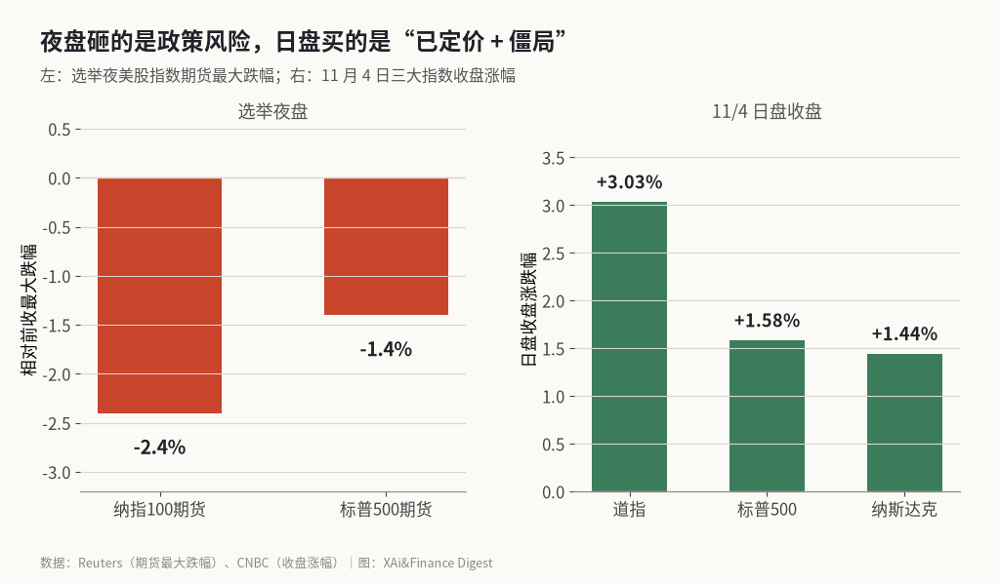
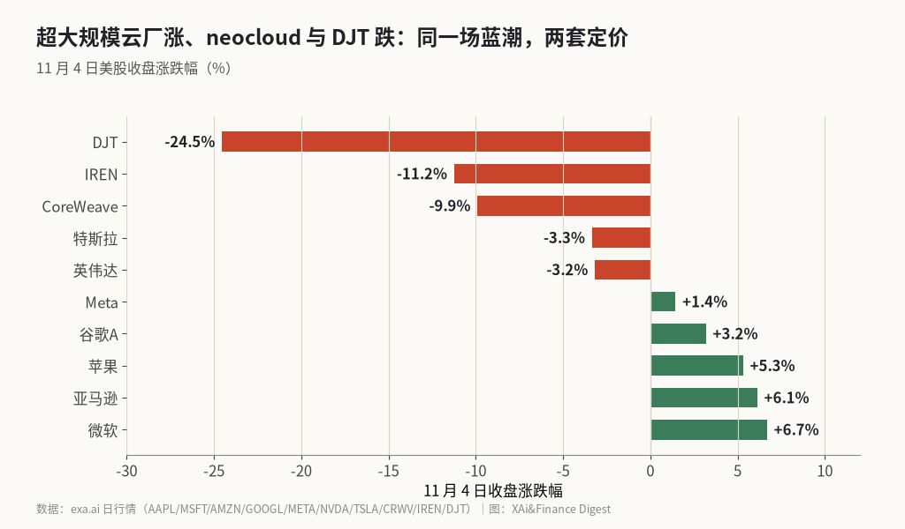

选举夜砸 AI 期货，白天指数又涨回来：蓝潮改的是 Capex 节奏，不是终局
纳指 100 期货选举夜一度跌 2.4%，标普期货跌 1.4% 并下探 7500 附近；11 月 4 日道指收涨 3.03%、标普 +1.58%、纳指 +1.44%。同一天微软、亚马逊、苹果涨超 5%，CoreWeave 与 IREN 跌约 10%，DJT 收跌 24.5% 创历史新低。
选举夜美股期货先砸 AI 相关仓位，白天三大指数又收在红盘。问题不是“蓝潮会不会杀死 AI”，而是：市场先交易了数据中心被限的政策风险，再交易了“结果已被定价、少花 Capex 反而抬高超大规模云厂自由现金流”的另一套逻辑。两套定价叠在同一交易日，指数看起来矛盾，拆开个股就不矛盾了。
我的判断是：民主党横扫两院，短期会拖慢美国数据中心扩张节奏，尤其是德州等关键州；但它没有改掉 AI 基础设施的终局叙事。夜盘亏的是“扩张受阻”，日盘赚的是“僵局 + 开支减速对现金流友好”。高盛提到的那约 45% 规划产能所在州，才是后续真会改结论的地方。
夜盘期货与日盘收盘对照

按路透的盘前报道，选举结果明确后，纳指 100 期货最多跌 2.4%，标普 500 期货最多跌 1.4%。多家交易台写到，标普期货一度摸到 7490–7500 一带——11 月 3 日标普现货收在 7568.92，这个位置刚好卡在技术派盯的支撑附近。Polymarket 当晚发帖称“标普永续期货跌破 7500”，方向与期货下探一致；我没去核对“永续”这个产品名是否等于 CME 的 E-mini，正文以路透的期货跌幅为准。
然后情绪翻了。特朗普对外表态愿意接受结果、并提到伊朗战争拖累共和党，隔夜期货从低点拉回。11 月 4 日收盘，道指涨 1569.40 点、+3.03%，报 53356.12，是 2025 年 4 月 9 日以来最好的一天；标普收 7688.62，+1.58%；纳斯达克收 25736.51，+1.44%。盘中纳指与标普都一度在 +1.5% 附近，和收盘差不多。
说白了，指数层面的“蓝潮砸盘”只活在夜盘。日盘交易的是另一句话：分裂政府、不确定性落地，历史上市场更喜欢僵局而不是单边授权。油价同一天跌超 8%，也给了指数额外推力——副总统 Vance 把共和党失利部分归到伊朗战争，交易台随之交易“战争开支与油价压力可能缓和”。可再生能源与医疗盘前就先涨，和 AI 基础设施股的方向正好相反。
同一天谁涨谁跌对照图

指数红盘掩盖了一条裂缝。微软收涨 6.68%，亚马逊 +6.12%，苹果 +5.31%，谷歌 A +3.18%，Meta +1.44%。英伟达 −3.17%，特斯拉 −3.34%。更下游的 neocloud 更重：CoreWeave −9.90%，IREN −11.24%。特朗普媒体 DJT 从前收 5.95 美元跌到 4.49 美元，−24.54%，盘中最低 4.46 美元，创上市以来新低；选举夜到早盘那会儿，跌幅一度接近 14%，和 X 上那条“近跌 14%”对得上，收盘更深。
这张图把故事说完了。超大规模云厂被当成“少建一些数据中心也能活、甚至现金流更好”的一方；靠扩张速度吃饭的 neocloud、以及绑定政治溢价的 DJT，被当成另一边。苹果盘中还摸到约 354 美元的历史高位，CNBC 的解释是：数据中心建设放缓，可能缓和内存涨价压力——苹果此前刚把毛利率指引下修，部分原因就是内存贵。SpaceX 与特斯拉因为总部在德州，也被一起交易进“选址风险”篮子，收盘分别走弱；英伟达跌幅小于 neocloud，更像是整条算力链里相对靠近需求方、但仍被当成 AI 贝塔的位置。
我核对收盘价时，没有把盘中最高涨幅写进结论。盘中微软、亚马逊一度接近 +7%，收盘略收敛，但方向没变。
数据中心承压：45% 产能州 vs 「少 Capex 利好」
Morningstar 援引高盛分析师的说法是：德州、佐治亚、密歇根等地的民主党州长，可能先做有条件停建，再推进限制数据中心的立法；这些州合计约占美国规划数据中心产能的 45%。德州本身就被 Wells Fargo 估成全美数据中心装机约 27% 的所在地，新州长 Gina Hinojosa 竞选时承诺立即停建并取消税收优惠——这一条是夜盘砸 AI 期货的直接由头。
⚠️ Kalshi 转述高盛时写成“近 50% 数据中心扩张承压”，我没有找到高盛原文用 50% 这个整数；权威媒体写的是 45%。下面不用 50% 做主论据。
Dan Ives 的两条表述可以并排看。一条说蓝色浪潮会拖慢美国规划中约 800–1000 座数据中心的建设节奏，他估大约 10% 最终建不起来；另一条写给交易台的逻辑是：AI 终局没变，放慢数据中心与 Capex，反而减轻“开支失控”的担心，对大科技偏利好。投资 TALK 君当晚也写过类似意思——先跌约 2%，随后多数跌幅被抹掉，蓝潮已被定价，两党都挡不住大科技继续投 AI。
这两句话并不打架。放慢的是工期和州一级许可，不是把 GPU 需求归零。对已经签下多年算力合同的超大规模云厂，Capex 曲线若被压平一点，自由现金流模型会好看一些；对还在抢地、抢电、靠杠杆扩机柜的 neocloud，同一件事就是订单与融资环境变差。CNBC 还写到 CoreWeave 五年期 CDS 利差走阔，说明债市也在给同一条裂缝定价：股权跌的是扩张故事，信用利差涨的是融资成本。
UBS 的口径更冷：联邦层面的全面限制未必推得动，真正伤项目的是州政府构成，尤其是德州。这句话和个股裂口一致——伤的是选址与工期，不是“AI 故事讲完了”。
DJT 创新低：政治溢价先被重估
DJT 不是 AI 股，但它把“选举夜定价”写得很直白。公司业务是 Truth Social，股价长期跟着特朗普政治势能走。民主党拿下参众两院，等于把总统后两年的议程放进否决与对峙的框架里；Bloomberg、华盛顿邮报都写到股价创历史新低。收盘 −24.5%，比夜盘“近 −14%”更深，说明日盘资金没有用指数反弹去救这个标的。
把它放进全文，是为了对照：指数反弹证明市场在买僵局与“少 Capex”，并不证明所有与共和党绑定的资产都被放过。政治溢价和算力 Capex 是两条线，别混着读。公司三季度业绩要到 11 月 9 日盘后才发布，所以这一天的下跌很难归因到新财报，更接近对政治势能折价的即时重估。
蓝潮改节奏，不改终局；改结论要看州一级落地
总的来看，11 月 4 日这场行情说明蓝潮冲击的是 AI 扩张节奏和选址，不是终局本身。夜盘期货把“数据中心被限”交易了一遍，日盘指数和超大规模云厂把“已定价 + Capex 减速利好现金流”又交易了一遍；neocloud 与 DJT 留下的跌幅，才是这条裂缝还没填上的证据。
主要风险有两处。一是德州等地真落地停建或取消税收优惠，高盛框出的那约 45% 规划产能被推迟或搬家，超大规模云厂 2027–28 年的资本开支指引被下修，连带上游半导体与电力设备一起重新定价。二是市场把“少 Capex”叙事买过头，一旦财报季云厂仍上调开支，日盘那套逻辑会反转。机会在另一侧：若州一级限制停留在听证与地方否决、实际并网与开工数据没有塌陷，指数对蓝潮的定价就会越来越像普通的中期选举僵局交易。
这个判断要改，最硬的信号是两类。一类是德州对新数据中心许可的行政令或立法文本落地，以及 CoreWeave、IREN 一类名字是否继续独立于纳指走弱；另一类是微软、亚马逊、谷歌、Meta 下一次财报电话会里，对 2027 年 AI 资本开支的表述是下修、持平还是继续上修。开支指引动了，夜盘与日盘那两套故事才会收成一套。
X 上怎么看
结论 · 分歧：夜盘恐慌 vs 日盘“已定价/少 Capex 利好”；政策落地仍是变量
▲ 看多2 位
▼ 看空5 位
观点为 X 用户当日公开帖子的中文摘要，忠于原文但有删减；标「未核实」的为预测、个人推测或单一来源说法。立场为人工判断。
数据来源
- 纳指 100 期货最多 −2.4%、标普期货最多 −1.4% 来自路透盘前报道；标普期货下探 7490–7500 来自 AInvest、StoneX 等交易台记述，与 Polymarket“跌破 7500”方向一致，产品名“永续期货”未与 CME 合约逐一对名。
- 道指 +3.03%（53356.12）、标普 +1.58%（7688.62）、纳指 +1.44%（25736.51）来自 CNBC 11/4 收盘综述；11/3 标普收 7568.92 用于说明 7500 附近的相对位置。
- 个股收盘涨跌幅均来自 exa.ai 日行情：微软 +6.68%、亚马逊 +6.12%、苹果 +5.31%、谷歌 A +3.18%、Meta +1.44%、英伟达 −3.17%、特斯拉 −3.34%、CoreWeave −9.90%、IREN −11.24%、DJT −24.54%（4.49 / 前收 5.95）。盘中“近 −14%”与 Polymarket 帖一致，收盘更深。
- 高盛“约 45% 规划产能所在州”转引自 Morningstar；Kalshi 帖写“近 50%”，未找到高盛原文用 50%，正文标 ⚠️ 且不以 50% 作主论据。德州约占全美数据中心装机 27% 的说法来自 CNBC 援引 Wells Fargo。
- Dan Ives“终局未变 / 少 Capex 利好大科技”来自其 11/4 X 帖；“约 10% 数据中心建不成”来自其被多家媒体转述的长帖，单一分析师估计。
- 投资 TALK 君“先跌约 2% 后抹去多数跌幅、蓝潮已定价”来自其 X 帖，与期货—现货路径一致，幅度以交易所/路透为准。
- https://www.cnbc.com/2026/11/03/stock-market-today-live-updates.html
- https://www.usatoday.com/story/money/markets/2026/11/04/stocks-wednesday-democrats-midterms/92607023007/
- https://www.morningstar.com/markets/us-midterms-how-markets-are-reacting-democrat-victory
- https://finance.yahoo.com/markets/stocks/articles/us-stock-futures-rise-democrats-095138242.html
- https://finance.yahoo.com/markets/article/trump-media-stock-plunges-12-after-democrats-sweep-congress-164416739.html
- https://www.washingtonpost.com/technology/2026/11/04/trump-media-stock-plunges-after-midterm/
- https://www.bloomberg.com/news/articles/2026-11-04/trump-media-falls-to-all-time-low-as-republicans-lose-congress
- https://www.stonex.com/en-gb/news-and-analysis/sandp-500-forecast-democrats-midterm-victory-rattled-markets-before-dip-buyers-stepped-in-2026-11-04/
- https://www.ainvest.com/news/trader-setup-blue-wave-election-sparks-market-rebound-ai-selloff-finally-reached-exhaustion-2611/
- https://www.investing.com/news/stock-market-news/ai-data-center-stocks-dip-renewables-surge-after-democrat-sweep-in-us-midterm-elections-4998519
- https://exa.ai/library/markets/stock/DJT?date=2026-11-04&view=daily
- https://exa.ai/library/markets/stock/DJT?date=2026-11-03&view=daily
- https://x.com/Polymarket/status/2117812872122454479
- https://x.com/Polymarket/status/2117814656483930498
- https://x.com/Polymarket/status/2118034718675595429
- https://x.com/Kalshi/status/2118086382140715231
- https://x.com/TJ_Research/status/2117857301151338518
- https://x.com/DivesTech/status/2118008096169570347
- https://x.com/amitisinvesting/status/2118028017905656125